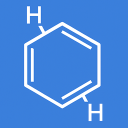

Structural Formulas Study
Structural Formulas Study is an iOS app that lets you explore and learn chemical structures and molecular properties — completely offline, anytime and anywhere.
üìã App Description
The app provides a simple and elegant catalog of over 100 molecules. You can browse all compounds or filter by category (Organic, Inorganic).
Tap on any molecule to view its structural formula and detailed properties such as molar mass, density, melting/boiling points, pKa, and more.
All data is stored locally, so no internet connection is required.
❓ Frequently Asked Questions (FAQ)
-
Q: Do I need an internet connection to use this app?
A: No. All structural formulas and data are included in the app and available offline, so you can study anytime without data access.
-
Q: Is the app free to use?
A: Yes. The app is free to download and use. It is supported by small banner ads at the bottom of the screen.
-
Q: Can I search or filter molecules?
A: Yes. You can search by name or formula, and filter by category (Organic, Inorganic) for quick access.
üì© Contact
If you have any questions or encounter issues, feel free to contact us:
← Back to Support Center